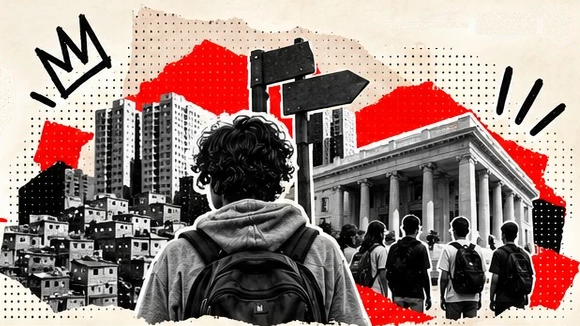
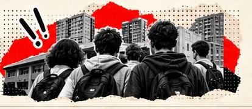
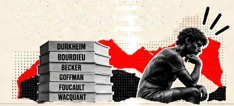
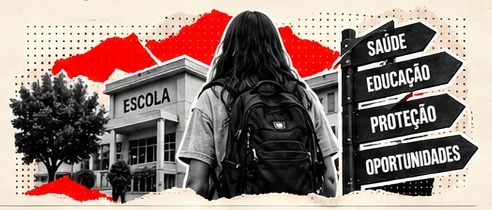
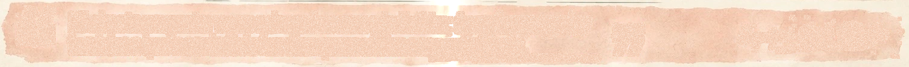
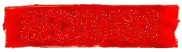
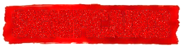
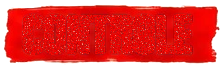

SOB EFEITO
PÁGINA 18
SOB EFEITO DE QUÊ?
Começamos com uma pergunta: como se formaram os padrões
de consumo e por que seus danos e julgamentos sociais se
distribuem de maneira desigual?
1TENDÊNCIAS E DESIGUALDADES
Não encontramos um único movimento
chamado “aumento das drogas”. Globalmente,
cresceram o número de usuários e a prevalência
anual. No Brasil, o LENAD registrou expansão
dos indicadores de drogas ilícitas, com destaque
para a cannabis. Entre estudantes, a PeNSE
mostrou tendências diferentes: a experimentação
de álcool, cigarro convencional e drogas ilícitas
diminuiu entre os indicadores selecionados,
enquanto a de cigarros eletrônicos aumentou.
2HISTÓRIA, CONTEXTO E RESPONSABILIDADE
A história também importou. Mercados reorganizam
a oferta; leis e instituições diferenciam categorias;
espaços urbanos concentram desigualdades e recursos.
Nada disso elimina os efeitos das substâncias ou a
responsabilidade individual. Explica por que a escolha
ocorre em condições desiguais e por que danos e
punições não têm distribuição idêntica.
Durkheim ajuda a pensar normas e punição;
Bourdieu, gostos e distinção; Becker, rotulação;
Goffman, estigma; Foucault, normalização;
Wacquant, marginalidade urbana. São lentes de
interpretação, não substitutos das pesquisas.
3JUVENTUDE, CUIDADO E POLÍTICAS
Na adolescência, compreender essa complexidade é essencial.
Experimentar não determina dependência, e um indicador médio
não descreve toda juventude. Escola, família, amizade, serviços
e territórios interferem nas possibilidades de cuidado e proteção.
Defendemos políticas que informem, previnam, acolham, fiscalizem
mercados e avaliem também a atuação do Estado. Um bom resultado
não é apenas tirar o problema do campo de visão: é ampliar direitos,
saúde e oportunidades reais.

RECURSOS
para enfrentar danos.

SIGNIFICADOS
atribuídos ao consumo.

CONTROLE
e seus caminhos institucionais.